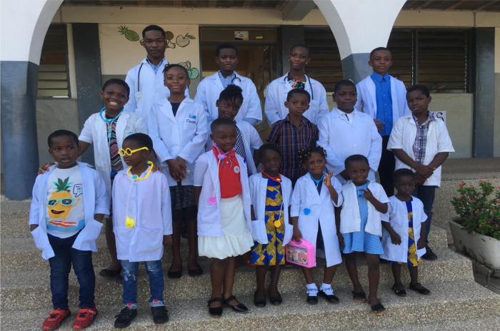
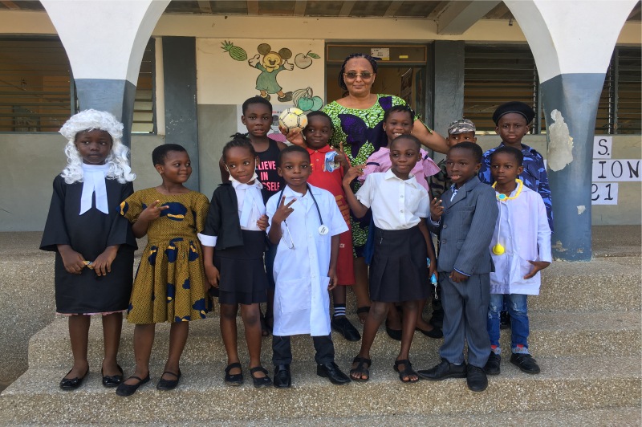
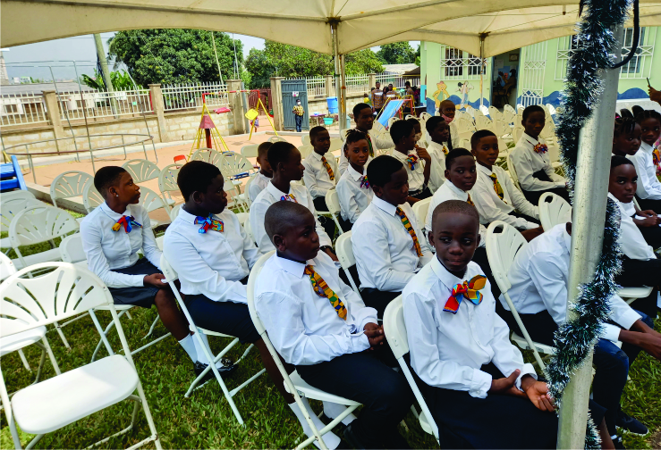

About Us
Welcome to Beulahland Christian School, where education meets excellence and faith. Our school is dedicated to providing a nurturing and challenging environment where students can thrive academically, spiritually, and socially. Located in the heart of Accra, Ghana, we serve a diverse community of learners from Kindergarten through Grade 9.
Our Values
At Beulahland Christian School, our values are the cornerstone of our community, guiding our actions and shaping our educational environment. We believe in fostering a space where every student can thrive academically, socially, and emotionally.

We encourage a culture of respect, where students appreciate and honor the differences and similarities in one another. Respect for self, others, and our environment is fundamental to creating a supportive and inclusive school community.

Integrity is at the heart of our actions and decisions. We instill a sense of honesty and ethical behavior in our students, emphasizing the importance of being truthful and doing the right thing, even when no one is watching.

We strive for excellence in all we do. Our commitment to high academic standards, personal growth, and continuous improvement ensures that every student is prepared to succeed in their future endeavors.
Request a visit now...